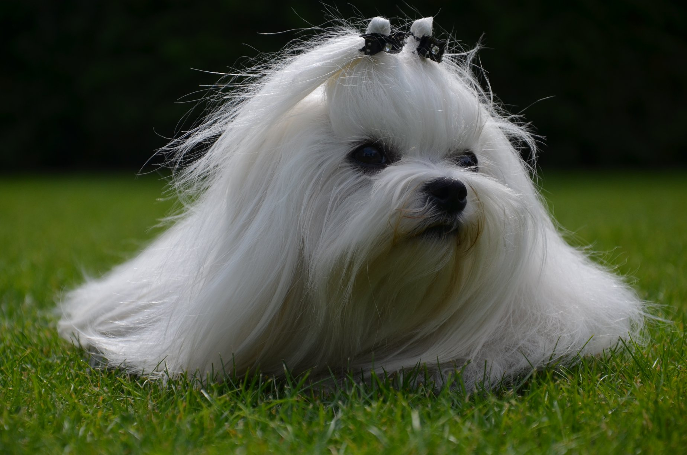

Ajra — Super pies

Nasz zespół to rodzina, której fundamentem jest miłość. Miłość do bliźniego i do psa jego. Początek hodowli to rok 2018, miłość do maltańczyków to zdecydowanie rok 2016.
Szkolenie i posłuszeństwo psów to jego broszka. Wycenia wartość psa i to z nim podpisujesz umowę, jeżeli zdecydujesz się na zakup szczeniaczka.
Ekspert w sprawie pielęgnacji i żywienia.
Co robić aby futerko było lśniące i naprawdę przyjemne w dotyku? Ona
to wie i chętnie dzieli się swoją wiedzą.
Spec od wystaw, oceny psów, social mediów. Człowiek psia encyklopedia. To właśnie ona odbierze telefon, gdy do nas zadzwonisz.
Posidanie psa to wspaniała przygoda. Nie bez powodu mówi się, że pies to najlepszy przyjaciel człowieka. W tym całym szaleństwie i euforii związanej z nowym członikem rodziny należy jednak pamiętać o kilku bardzo ważnych rzeczach.
Nowy przyjaciel w domu to wielka radość, ale również obowiązek. To czas który zabieramy sobie, a ofiarowujemy naszemu nowemu członkowi rodziny.
Ile godzin w tygoniu potrzebuje poświęcić psu?
Jak widzisz, każdy z wymienionych wyżej punktów to jednocześnie przyjemność i obowiązek. Jeżeli wiesz, że na tym etapie życia nie jesteś w stanie poświęcić psu odpowiedniej ilości czasu rozważ zakup psa w innym lepszym dla Ciebie i maleństwa terminie.
Nie sprzedajemy szczeniaczków do rodzin z małymi dziećmi. Nie gniewaj się na nas, nie robimy tego bez powodu. Mamy ku temu nawet bardzo dobry powod. Nauczeni doświadczeniem, wiemy jak trudno jest wygospodarować czas dla pieska, gdy po domu śmigają Twoje małe dzieciaczki, nierzadko jeszcze na czworaka. Nie jest też zagadką to, że Twoje maleństwa zawsze będzie dla Ciebie na pierwszym planie, a piesek na drugim. Istnieje bardzo duże prawdopodobieństwo, że nie będziesz w stanie poświecić mu odpowiedniej ilości czasu. Dobro naszych szczeniaczków jest dla nas najważniejsze, dlatego zgłoś się do nas jak Twoje dzieciaczki będą w wieku szkolnym. Jest to okres czasu kiedy będą mogły aktywnie uczesniczyć w wychowywaniu pieska, a Ty będziesz miał więcej czasu bo Twoje pociechy będą względnie samodzielne.
Bardzo często dobieramy rasę psa, pod naszą osobowość i szczerze powiedziawszy jest to naprawdę mądra decyzja. Czy maltańczyk jest psem dla każdego? Skłamałabym jeżeli odpowiedziałabym, że tak.
Dla kogo nie jest?
Dla kogo jeszcze nie jest maltańczyk?
Więcej Cię nie ma w domu, niż jesteś?
To dla kogo ten pies?
Cześć, Nazywam się Iza. W naszej hodowli odpowiadam za kontakt z Tobą. Odpowiem na każde Twoje pytanie. Szczerze, z form kontaktu najbardziej lubię rozmowę. Dzwoń, śmiało!
Numer telefonu: 511-327-345